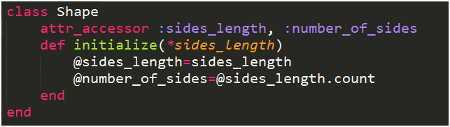
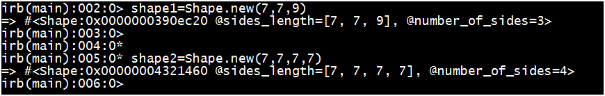
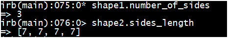
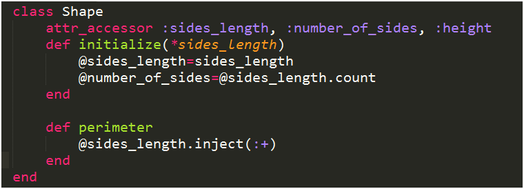
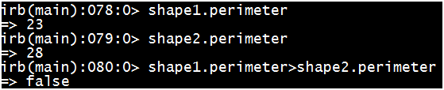
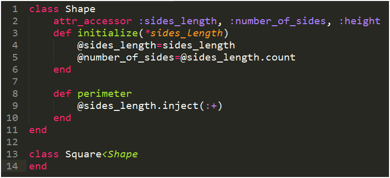
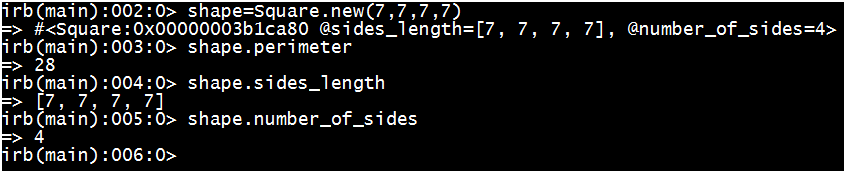

Ruby Class
October 18, 2014
To me, Classes makes creating an object in Ruby much easier. We know what properties an object have in real life that defines that object and we can use Class and instance variables to create those properties in Ruby. Let’s see in an Example of Shape Class.
To Create a Class of Shapes we enter the following:

We create a class by typing "class Shape", class is in lowercase and name of the class Shape must be capitalized. The we define "Initialize(*sides_length)", this method tells Ruby that when a new instance of the class Shape is created, it requires input of lengths of all sides of the shape. (*sides_length) in this case will allow multiple number of sides length to be entered. All sides length entered will turn into an Array and be assigned to instance variable @sides_length (see picture above), and another instance variable @number_of_sides will be calculated.
So what is instance of a class? It's an object and since every object can have different number of sides and sides length, their instance variable will hold different values. Instance Variables are create with the @ symbol at the beginning of the variable, like @sides_length.Plese see image below, After loading the code in Ruby interpreter, I created 2 instances of Shape, shape1 and shape2 by entering shape1=Shape.new(7,7,9), and shape2=Shape.new(7,7,7,7). See each instance or object have different number of sides and lengths assigned to their own instance variable.

The line above initialize method, attr_accessor is where I list the name of the instance variable and replace the “@” to “:” sign so I can call their values anytime in irb. See image below

To extend the function in Shape class, I have added the method perimeter, and it will add up all sides of the object. After creating the object, we can call on the method perimeter to calculate it's perimeter, and if we want, we can compare the perimeter of 2 objects in language that's similar spoken language, see example below.


Shape1.perimeter>Shape2.perimeter => false. How straight forward is that. What's attractive here is that, you can write these methods once and apply them to a 'sub category' of Shape like a Square, see image below how the Square class is empty, yet we can use all the methods and instances variable of Shape class because we created Square as a child class of Shape. We can do the same for Triangles and more but one have to write the code once. We can then create methods to calculate areas for each sub-class.But since many other rule will need to be applied to validate if the sides provided can actually form a shape and all the different methods used to calculate area for different shapes, I'll stop the quick tour on Ruby Class here.

